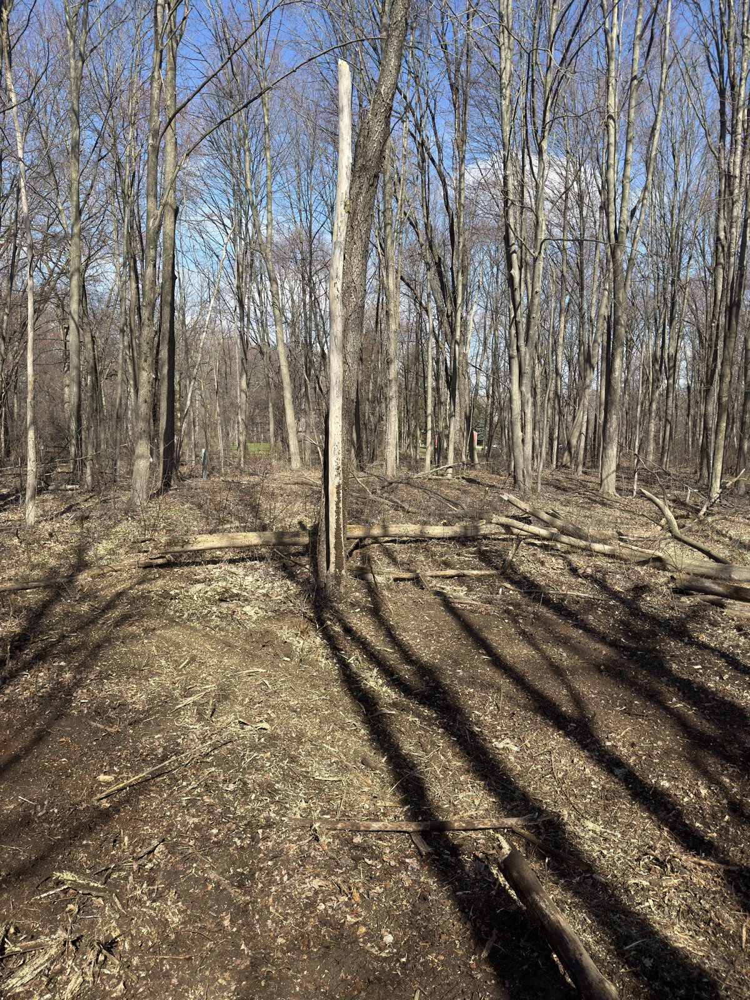
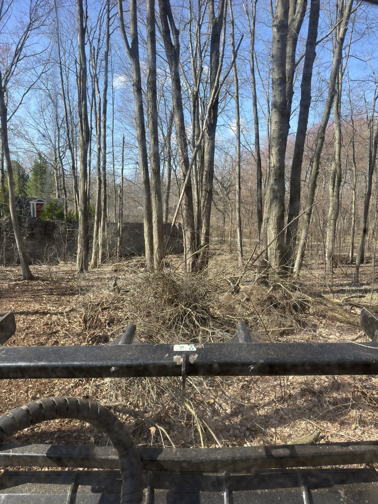
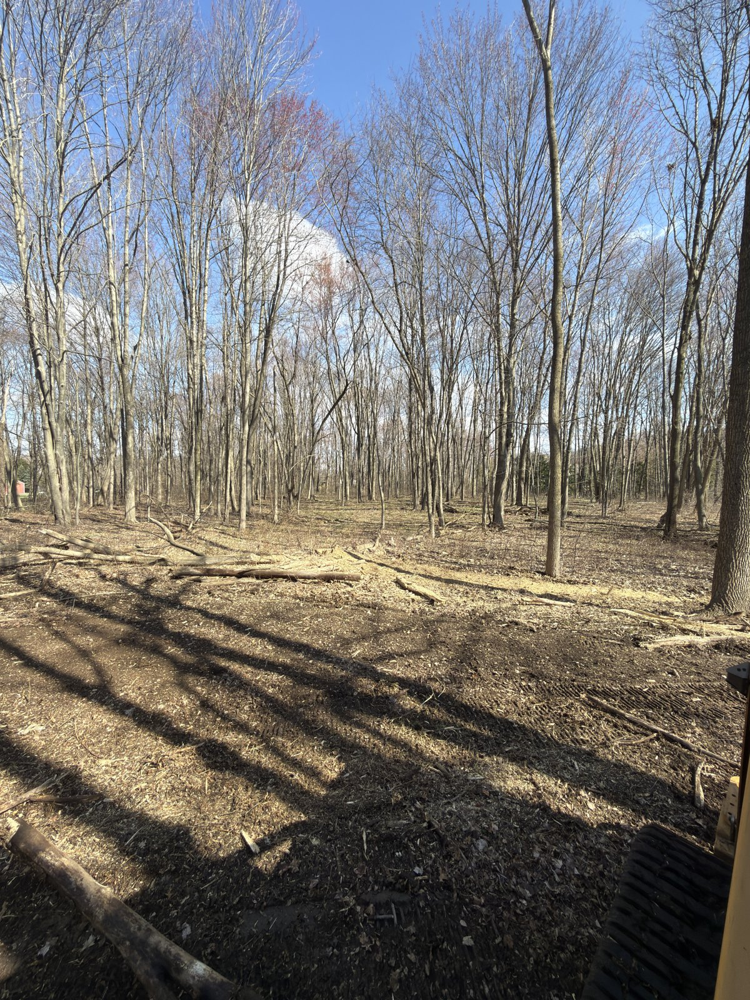

Forestry mulching grinds brush and small trees in place — one machine, one visit, and ground you can walk the same day.
A high-powered mulching head on a purpose-built track machine grinds standing brush, saplings, and small trees (up to about 6–8 inches) into a layer of mulch, right where they stand.

Mulching cuts to ground level — it doesn't pull roots or stumps out. If your project needs a build-ready pad or full root removal, that's excavation work, and we'll tell you straight. Some regrowth from roots is normal; most customers book a fast maintenance pass every year or two to keep things clean.


Wooded backyard understory, Northville area — cleared in a day.
Send 2–3 photos — most quotes go out the same day.